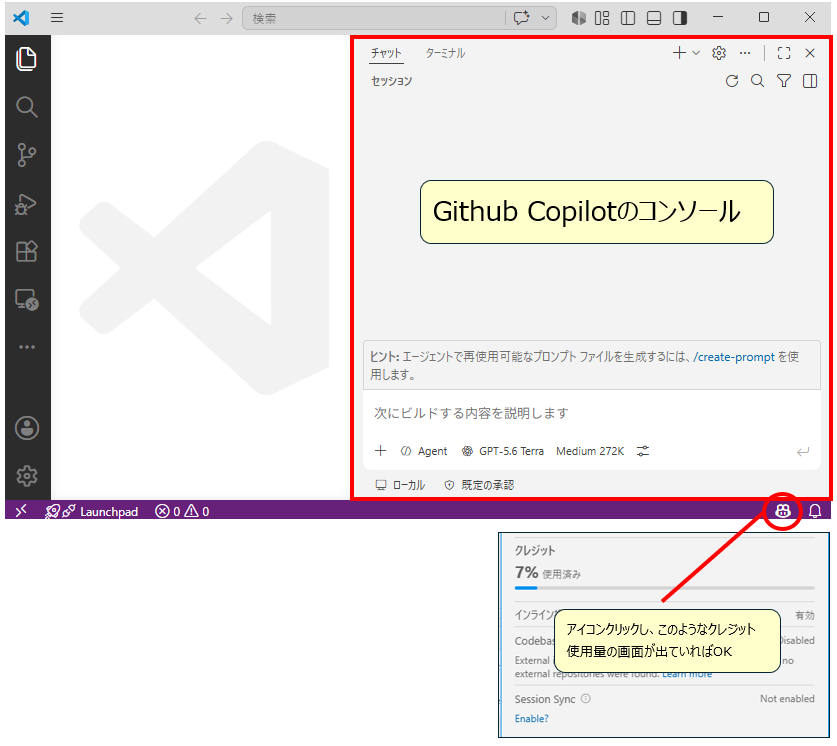
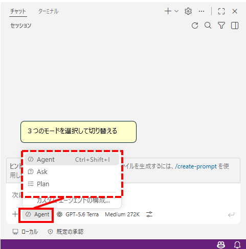
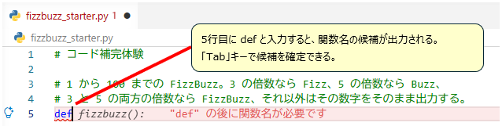
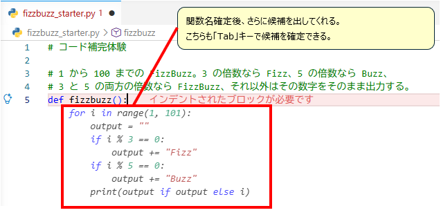

全3回のトレーニング概要
- 第1回：基礎 生成AIとGitHub Copilotの概要を学び、コード補完、処理説明、処理フロー生成を体験します。
- 第2回：活用 プロンプト設計を学び、リファクタリング、バグ修正、テスト生成、Vibe Codingを体験します。
- 第3回：実践 Planモードを活用した開発と、バグ修正や機能改善を含む課題解決に取り組みます。
第1回目のアジェンダ
| 時間 | 内容 | 所要 |
|---|---|---|
| 0–15 分 | 導入：オリエンテーション・環境チェック | 15 分 |
| 15–30 分 | 講義① 生成 AI とは？ | 15 分 |
| 30–40 分 | 講義② GitHub Copilot 概要・3 モード（Ask / Agent / Plan） | 10 分 |
| 40–50 分 | 講義③ トークンと AI 利用量の説明 | 10 分 |
| 50–55 分 | 休憩 | 5 分 |
| 55–75 分 | ハンズオン① コード補完体験 | 20 分 |
| 75–95 分 | ハンズオン② プロンプトで処理を説明させる | 20 分 |
| 95–110 分 | ハンズオン③ 処理フローを図として出す | 15 分 |
| 110–120 分 | 振り返り・Q&A・アンケート回答 | 10 分 |
本日のゴール
- 生成 AI と AI コーディングエージェントの概要と特性を理解する
- GitHub Copilotの 3つのモード（Ask / Agent / Plan）を理解する
- トークンと AI Credits（利用量）の考え方を理解し、コストを意識した使い方ができる
- コード補完を使える
- 既存コードを GitHub Copilot に説明させられる
- 処理フローを図として生成させ、ドキュメントに残せる
事前準備チェックリスト
開始前に以下が揃っていることを確認してください。
| 項目 | 確認方法 |
|---|---|
| Python 3.11+ | python --version |
| Git 2.40+ | git --version |
| VS Code 1.106 以降 | code --version（Plan モード演習で必須） |
| GitHub Copilot（VS Code 1.106 以降は本体に同梱） | VS Code 右下に GitHub Copilot アイコンが表示され、サイドバーにチャットアイコンが表示される |
| GitHub Copilot サインイン | アイコンをクリック → アカウント名が表示される |
| GitHub Copilot ライセンス（組織契約 Business / Enterprise） | ブラウザで github.com/settings/copilot を開き、組織経由のアクセス（Business / Enterprise）が表示される。あわせてチャットパネル下部にモードピッカー（Ask / Agent / Plan）が表示されることも確認 |
| 教材一式 | 配布 ZIP を展開済み（推奨：git init 済み） |

講義①：生成 AI とは？
1. 生成 AI とは何か
生成 AI とは、学習した大量のデータをもとに、文章・画像・ソースコードなどの新しいコンテンツを生成する AI です。GitHub Copilot でも、コードの補完、説明、修正案の提示に生成 AI が使われています。
生成 AI が作るコンテンツは「正しさ」が保証されているわけではありません。
2. 用語の地図：生成 AI / LLM / エージェント
3. AI ツールの分類
| 分類 | 例 | 特徴 |
|---|---|---|
| 補完特化型 | 初期 GitHub Copilot（2021） | エディタ内でゴーストテキストを出すだけ（※現行 GitHub Copilot にもこの機能は内包） |
| 汎用 LLM チャット | ChatGPT / Claude / Gemini | コーディング専用ではないが、コピペ運用で広く使われる |
| コーディングエージェント | GitHub Copilot / Cursor / Codex / Claude Code | 自律的にファイルを横断で読み書き・コマンド実行・テスト実行など |
2025 年以降、このコーディングエージェント型の活用が一気に広がりました。
本日はその中の１つ、GitHub Copilot を題材に触っていきます。
4. 得意なこと／苦手なこと（分かれ目は「指示の明確さ」）
得意・苦手は作業の種類で決まるというより、やってほしいことがどれだけ明確に伝わっているかで決まります。生成 AI は渡された情報だけを手がかりに続きを組み立てるため、指示が明確なほど精度は上がり、曖昧なほど精度は落ちます。
| 精度が高くなる（指示が明確） | 精度が低くなる（指示が不明確） |
|---|---|
| 入力・処理・出力が言葉になっている 例：「1〜100 を順に出力し、3 の倍数なら Fizz、5 の倍数なら Buzz にする」 |
ゴールが一言で終わっている 例：「いい感じに直して」「使いやすくして」 |
| 期待する結果が具体例で示されている 例：「 20260401 を渡したら 2026/04/01 を返す」 |
判断が受け取る側に委ねられている 例：「日付をいい形式にして」（どの形式かは書かれていない） |
| 守ってほしい制約が明記されている 例：「外部ライブラリは使わず標準機能だけで書いて」 |
人間なら当然察する前提が書かれていない 例：社内の命名規則、エラー処理の作法（下表） |
| 人間が暗黙的にやっていること（例） | 渡さないと、こうなる |
|---|---|
| 社内の命名規則・コーディング規約 | 一般的には正しいが、社内規約から外れた名前・書き方で出てくる |
| 業務ルール（例：顧客番号は 10 桁ゼロ埋め） | 桁数やゼロ埋めが抜けたまま、動いてしまうコードになる |
| エラー時の扱い（例外を投げるのか、戻り値のコードで返すのか） | その場の一般的な作法で書かれ、既存コードと流儀が揃わない |
| ログに出してよい情報／出してはいけない情報 | 個人情報を含む値をそのままログに出力してしまう |
| 使ってよいライブラリ・バージョンの制約 | 社内で未承認のライブラリを前提にしたコードが出てくる |
暗黙の前提を「情報として渡す」3 つの方法
- 例（サンプル）を見せる：同じような処理の既存コードを開いておく、あるいは該当箇所を選択して渡します。規約を言葉で説明するより、実例を 1 つ見せるほうが早く正確に伝わります
- 入出力を具体的に書く：「こう渡したら、こう返ってほしい」を 1〜2 組そえるだけで、狙いが一気に絞られます
- 制約を先に書く：使ってよい範囲、守るべき形式、避けたい書き方を、指示の中に明記します
「苦手」は固定ではありません。足りない情報を渡せば、苦手側の多くは得意側に寄せられます。逆に、渡していない前提は言い方を変えても埋まりません。
5. 押さえておく 3 つの特性
- 確率的応答（temperature / sampling）：同じ質問でも毎回違う答えになり得ます。再現性が無いのが原則です。
- 学習時点のスナップショット：モデル内蔵の知識は学習が終わった時点で凍結されます。最新ライブラリ・最新 API は知らないことがあります。
- 渡した文脈（コンテキスト）で答える：モデルの中の知識とその場で渡した情報は別物です。今書いているコードを GitHub Copilot が理解できるのは、そのコードを学習しているからではなく、開いているファイルや選択範囲が毎回コンテキストとして送られているからです。
6. ハルシネーション
ハルシネーションとは、生成 AI が事実ではない内容を、もっともらしい形で出力してしまう現象です。
講義②：GitHub Copilot 概要・3 モード（Ask / Agent / Plan）
GitHub Copilot Chat の 3 つのモード（2026 年 7 月時点）
| モード | 役割 | 使う場面 |
|---|---|---|
| Ask | 質問・相談 | コードを書き換えず、概念理解・レビュー |
| Agent | ファイル横断の読み書き・コマンド実行・テスト実行 | AI が対象を選び、ツールも実行する自律タスク |
| Plan | 計画立案 | 大きな仕様の前に「やること」を文書化、人間の承認ゲートを挟む |

加えて、Inline Chat（Ctrl+I） はエディタ内に直接小さなチャット UI を出し、選択範囲やカーソル位置の編集を即座に依頼できる軽量 UI です。
GitHub Copilotのモードの動き
GitHub Copilotは、コードの続きを提案するツールから、目的に応じて必要な情報を集め、作業を支援するAIへ進化しています。Ask、Agent、Planのいずれも、依頼内容に応じてワークスペース内のファイルや会話の文脈を参照し、必要な情報を集めながら回答します。違いは、自律的に情報を集めるかどうかではなく、情報を集めた後にどこまで作業を進めるかです。
| モード | 情報収集後の動き | 向いている場面 |
|---|---|---|
| Ask | 関連するコードやファイルを調べ、説明、回答、改善案を提示します。基本的にはファイルを直接変更せず、人が判断するための情報を返します。 | コードの理解、仕様確認、原因の相談、レビュー |
| Plan | 関連ファイルや依存関係を調べ、変更対象、作業順序、確認方法を計画として整理します。実装前に影響範囲を確認したい場合に使います。 | 複数ファイルにまたがる変更、実装方針の整理、作業見積もり |
| Agent | 必要なファイルを調べたうえで、ファイル変更、ターミナル操作、テスト、修正、再確認まで進めます。失敗した場合は結果を読み、別の方法を試します。 | 機能追加、バグ修正、テスト追加、ビルドエラーの解消 |
Agentモードが実行まで進める作業例
- 複数ファイルの機能追加：画面、API、データ処理、テストなど、関係するファイルを探してまとめて変更します。
- ビルドエラーの解消：ビルドを実行し、エラー内容を読んで、型、参照、設定などを修正します。
- 依存関係の調査と修正：設定ファイルやロックファイルを読み、ライブラリの不足やバージョン不整合に対応します。
- リファクタリング：利用箇所を横断的に調べ、関数名の変更や共通処理の切り出しを行います。
- テストの追加：既存テストの書き方を読み、変更した機能に合わせて正常系と異常系のテストを作ります。
- ログからの原因調査：アプリケーションログやターミナル出力を読み、修正と再実行を繰り返します。
- ドキュメント更新：実装変更に合わせてREADME、設定例、操作手順などを更新します。
講義③：トークンと AI 利用量の説明
トークンの正体
- トークン：AI が文章を読み書きする際の最小単位。
- 日本語は 1 文字あたり 1〜3 トークンを消費するのが一般的（英語の方がトークン効率は良い）
- コンテキストウィンドウ：AI が一度に読み書きできる入力・出力の合計トークン量（主要モデルは 100K〜1M トークン規模）
- 長いファイルや長い会話履歴を渡すほど、コンテキストウィンドウとトークン消費の両方を圧迫します
AI Credits（利用量）の考え方
利用するモデル、利用するトークン数 に応じて消費する credit が変わります。
効率よく使うポイント
- コード補完は使い放題：ghost text による補完・Next Edit Suggestions は AI Credits を消費しないため、遠慮なく使ってよい
- Chat / Agent はクレジットを消費：1 回のやり取りごとに、入力＋出力のトークン量に応じて消費される
- 無駄なコンテキストを渡さない：巨大なファイル全体ではなく、必要な範囲だけを選択してから質問する
- プロンプトを 1 回で的確に書く：曖昧な指示で何度もやり取りするより、What/How/Why を最初から含めたほうが消費を抑えられる
休憩（5 分）
席に戻ったら VS Code を開いて、リポジトリのフォルダにいる状態で待機してください。
ハンズオン①：コード補完体験
完成イメージ
fizzbuzz_starter.py を実行すると、1 から 100 までの FizzBuzz が出力される。
Fizz、5 の倍数なら Buzz、3 と 5 の両方の倍数なら FizzBuzz、それ以外はその数字をそのまま出力します。
1 2 Fizz ← 3 の倍数 4 Buzz ← 5 の倍数 Fizz ← 6（3 の倍数） ... 14 FizzBuzz ← 15（3 と 5 の両方の倍数）
手順 1：補完を出して確定する
このファイルには「何をしたいか」を書いた日本語コメントだけが入っています。コードは 1 行も書かれていません。ここから GitHub Copilot に書かせます。
# コード補完体験 # 1 から 100 までの FizzBuzz。3 の倍数なら Fizz、5 の倍数なら Buzz、 # 3 と 5 の両方の倍数なら FizzBuzz、それ以外はその数字をそのまま出力する。
- VS Code で
samples/session1/fizzbuzz_starter.pyを開きましょう - FizzBuzz の説明コメント（3〜4 行目）の直下、5 行目（ファイルのいちばん下の空行）にカーソルを置きましょう
defと入力して、そのまま 1〜2 秒待ちます。カーソルの先に薄いグレーの文字でfizzbuzz():という関数名の候補が現れます。これが GitHub Copilot の提案（ゴーストテキスト）です。まだ確定していないので、ファイルには何も書き込まれていません
図3：5 行目に def と入力すると、関数名の候補がゴーストテキストで提案される - 内容を確認しましょう。問題なければ Tab キーで確定します（
Escで却下、提案が複数あればAlt+]/Alt+[で切り替え） - 関数名を確定すると、続けて関数の中身がまとめてゴーストテキストで提案されます。こちらも内容を確認して Tab キーで確定しましょう

図4：関数名を確定すると、続けて関数の中身がまとめて提案される
どんな提案が出てくるか
この題材では、おおむね次のようなコードが提案されます。
def fizzbuzz():
for i in range(1, 101):
output = ""
if i % 3 == 0:
output += "Fizz"
if i % 5 == 0:
output += "Buzz"
print(output if output else i)
output に文字を足していく書き方ではなく if i % 15 == 0: から始まる if-elif-else で提案してくる、引数付きの def fizzbuzz(n=100): になる、といった違いが出ます。講義① の確率的応答のとおり、同じ場所でも毎回同じ答えにはなりません。やりたいことが書けているかという目で見てください。
手順 2：実行して結果を確認する
- ファイルのいちばん下（関数の外側・インデントなし）に、作った関数を実行する 1 行を追記しましょう
fizzbuzz()
補完された関数名が
fizzbuzz以外だった場合や、引数付き（def fizzbuzz(n=100):など）だった場合は、その名前・引数に合わせて書きます（例：fizzbuzz(100)）。提案の中に既に呼び出し行が含まれていた場合は、この手順は不要です。 - ファイルを保存しましょう（Ctrl+S）
- VS Code 上部のメニューから ターミナル → 新しいターミナル を選びましょう。画面下部にターミナル欄が開きます
- 次のコマンドを入力して
Enterを押しましょう（Windows・PowerShell の場合）python samples\session1\fizzbuzz_starter.py
- ターミナルに
1から100までの出力が流れ、3の位置にFizz、5の位置にBuzz、15の位置にFizzBuzzが並んでいれば成功です

補完を引き出すコメント
ここまでで分かるとおり、インライン補完は直前のコメントを手がかりにコードを組み立てます。今度は自分でコメントを書いて、補完を引き出してみましょう。ファイルのいちばん下に次の 1 行を書き、Enter で改行して 1〜2 秒待ちます。
# リストの中の偶数だけを合計する（リスト内包表記を使う）
「何をしたいか」を具体的に書くほど、提案は狙いに近づきます。逆にコメントが曖昧だと、提案も的を外します。
ハンズオン②：プロンプトで処理を説明させる
準備
- VS Code で
samples/session1/csv_processor.pyを開きましょう - サイドバーの GitHub Copilot Chat アイコンをクリックして、チャットパネルを開きましょう
- モードピッカーが Ask になっていることを確認しましょう
ステップ A：まず、ひと言だけで頼んでみる（5 分）
Chat の入力欄に、次の 1 文だけを入力して送信しましょう。
この処理を説明して
「この処理」が指すのは、エディタで開いているファイル（アクティブなタブ）です。コードを範囲選択してから送れば、その選択範囲が対象になります。
返ってきた説明を読んでみてください。それなりに読めるものは返ってきますが、何をどこまで書くかは GitHub Copilot まかせです。自分が知りたかったことが入っているかどうかは、送ってみるまで分かりません。
ステップ B：構造化プロンプトで深掘りする（本題・15 分）
ここが今回の本題です。ステップ A のように短く頼むと、返ってくる項目も粒度も相手まかせになります。次は、初めてこのコードを触る人が知りたいことをこちらから指定して説明させてみましょう。
このファイルを解析し、下記に従って処理を説明して 1.目的：このファイルは何のためのものか（1～2 文） 2.実行方法：起動コマンド・必要な入力・出力先（表で） 3.処理の流れ：主要な処理を上から順に 5ステップ程度 4.関数一覧：登場する関数をすべて 5.注意すること：実行すると何が起きるか、エラー時はどうなるか、暗黙の前提（箇条書き） 6.コードから読み取れなかった点（箇条書き） コードから確認できないことは推測せず「不明」と記載すること
csv_processor.pyをエディタで開いた状態（アクティブなタブ）にしましょう。「このファイル」はこのタブを指します- 上のプロンプトを Chat の入力欄に貼り付け、送信ボタン（または Enter ）で送信しましょう
- 出力結果を読み、コードと照らし合わせて正しいか確認しましょう
ステップ A の「ひと言」と、ステップ B の「構造化プロンプト」。同じコードに対して返ってくるものがどれだけ変わるかを見比べると、プロンプトを書く価値が体感できます。
プロンプトの工夫ポイント
良いプロンプト = 3 つの要素を含む
- What：何をしてほしいか（要約・列挙・変換）
- How：どんな形式で（1〜2 文、表で、箇条書きで）
- Why / Context：背景情報（対象ファイル、制約、推測を禁じる指示）
悪い例：「これ何？」／ 良い例：「このファイルの主目的を 1 文で説明し、実行すると何が起きるかを箇条書きで」
うまくいかない場合のヒント（クリックで展開）
| 症状 | 対処 |
|---|---|
| 別のファイルの説明が返ってくる | 説明させたいファイルをエディタで開き、そのタブをアクティブにしてから送信する。または Chat 入力欄の 📎（コンテキストを追加）からファイルを指定する |
| 説明が表形式にならない | プロンプトに「Markdown の表形式で」と追記 |
| 説明が長すぎる | プロンプトに「200 文字以内で」と制約を追加 |
| 英語で返ってくる | プロンプト末尾に「日本語で答えてください」を追加 |
ハンズオン③：処理フローを図として出す
手順：GitHub Copilot Chat上でフロー図を表示する
csv_processor.pyをエディタで開いた状態（アクティブなタブ）にしましょう- GitHub Copilot ChatをAgentモードに切り替えましょう
- 次のプロンプトを送信しましょう
このファイルを読み、主要な処理フローを図にしてください。 - 入力ファイルの存在確認、CSV読み込み、2種類の集計、標準出力、CSV書き出しを含める - 入力ファイルがない場合のエラー終了も分岐として表す - 各要素は日本語で、開始と正常終了・異常終了を区別する - GitHub Copilot Chat上でプレビューできるフロー図として表示する - 主要な処理に絞り、見やすい縦方向の図にする
- Chat上に表示された図を見て、処理順、分岐、日本語ラベルがコードと一致するか確認しましょう
- 誤りや読みにくさがあれば、「主要5ステップに絞ってください」「エラー処理を右側に分けてください」のように修正を依頼しましょう
- 図の表示部分を展開し、図のもとになっている記述を確認しましょう
- VS Code 上部のメニューから ターミナル → 新しいターミナル を選び、画面下部にターミナル欄を開きましょう。
- ターミナルの現在位置が教材リポジトリのフォルダーであることを確認しましょう。
- ターミナル欄で次のコマンドを順番に実行しましょう。
git add . git commit -m "session1 completed"
git commit の実行後にコミットIDと変更件数が表示されれば保存完了です。エラーが表示された場合は、その内容を確認してから次のフェーズへ進んでください。
振り返り・Q&A・アンケート回答（10 分）
今日ひととおり触れたのは、次の 6 つです。
- 生成 AI の仕組み（次に来そうな語を確率で選ぶ）と、その帰結としての限界（ハルシネーション）
- GitHub Copilot の 3 モード（Ask / Agent / Plan）と Inline Chat
- トークンと AI Credits（利用量）の考え方
- コード補完（Tab で確定）
- 構造化プロンプトによる既存コードの理解
- 処理フローを図として生成させる
Q&A
ここまでの内容で疑問点があれば回答しますので、遠慮なく質問してください。
アンケート回答
次のアンケートフォームに回答してください。満足度・改善要望・感想を共有していただけると、次回以降の教材改善に役立ちます。
https://forms.cloud.microsoft/r/sSHE7BmDex
次回予告
次回のテーマは「実装支援機能をマスターする」です。扱うのは次のあたり。
- リファクタリング（観点を指定して命名・関数分割）
- バグ調査・修正（エラーメッセージから
/fix） - 単体テスト生成（pytest 連携）
- Vibe Coding でテトリスを作る
気になったことがあれば、遠慮なく質問してください。